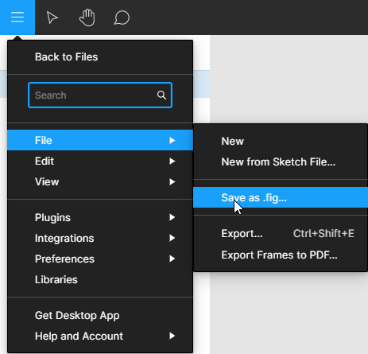
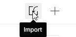
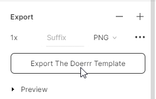

☑ The Doerrr Wallpaper membantu kamu fokus ke aktifitas penting kamu.
☑ Menjadi Reminder bahwa semua pencapaian butuh proses. Tidak instan.
☑ Menyaring tugas-tugas terpenting kamu. Menjadikan kamu produktif.
☑ Kostumisasi tugas sesuai keperluan kamu dengan bebas dan mudah.
☑ Jadikan The Doerrr sebagai Wallpaper di laptop maupun PC kamu.
1. Buka link template berikut di Figma.com [Open]
2. Pastikan kamu buka link diatas melalui Laptop/PC
3. Login ke Figma melalui akun Google kamu
4. Setelah login. Klik Menu > File > Save as .fig
5. THE DOER WALLPAPER [SHARE].fig terdownload
6. Buka file di point 5, melalui menu import di Figma
7. Lakukan kostumisasi sesuai kebutuhan kamu
8. Save/Export sebagai image berformat .PNG
9. Selesai! Gunakan image tadi sebagai Wallpaper